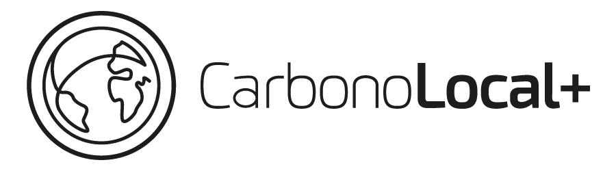
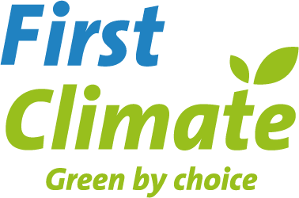
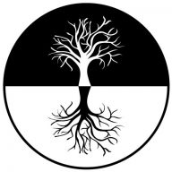

Purpose & impact thesis
Make restoration economically viable for rural communities through climate finance, regenerative agriculture and long-term environmental and social value.

CLIMATE FINANCE · REGENERATION · COMMUNITY
Carbono Local+ connects climate finance, carbon project development and local implementation to help rural communities capture the value of restoring nature.
THE VALUE WE AIM TO UNLOCK
Our ambition is to reward communities for restoration, support a transition to regenerative agriculture and strengthen long-term economic resilience through climate finance.
THE COMPANY IN BRIEF
Established in Germany in 2021, Carbono Local+ brings together carbon management, consulting and project development. Carbono Local SAS was founded in Colombia in February 2025 to provide local feasibility, implementation, monitoring and technology services.
CarbonoVivo is the first carbon project supported by Pachavera, a project operating system under development. First Climate is the anchor buyer/client contracted with GmbH.
“Carbono Local+ Corp” is the collective business and management name. GmbH and SAS are legally independent, with the same shareholders. GmbH has no equity ownership in SAS.
EXECUTIVE BUSINESS MODEL
flowchart LR DE["GmbH · Germany<br/>Carbon development & consulting<br/>Contracts, certification & buyers"] CO["SAS · Colombia<br/>Pachavera + field execution<br/>Technology, monitoring & data"] DE -->|"First client · service fees"| CO CO -->|"Project delivery · farmer readiness"| DE classDef de fill:#1b4034,color:#fff,stroke:#1b4034 classDef co fill:#4c2933,color:#fff,stroke:#4c2933 class DE de class CO co
flowchart LR
DE["GmbH · Germany<br/>Carbon development & consulting<br/>Contracts, certification & buyers"]
CO["SAS · Colombia<br/>Pachavera + field execution<br/>Technology, monitoring & data"]
DE -->|"First client · service fees"| CO
CO -->|"Project delivery · farmer readiness"| DE
classDef de fill:#1b4034,color:#fff,stroke:#1b4034
classDef co fill:#4c2933,color:#fff,stroke:#4c2933
class DE de
class CO co
Independent entities at the same level. GmbH develops long-term carbon value; SAS delivers technology and operational services. GmbH is SAS’s first client.
CORP · CONNECTED SYSTEM
Independent companies, participants and specialist partners connect climate finance to regenerative activities and reliable project evidence.
Corp is a collective management name. GmbH and SAS share shareholders and operate at the same level; GmbH does not own SAS.
flowchart TB subgraph ENT["Independent companies · shared purpose"] direction LR DE["GmbH<br/>Carbon management & consulting"] CO["SAS<br/>Field PM & technology services"] end DE -->|"First client / fees"| CO CO -->|"Operational delivery"| CV["Carbon projects<br/>CarbonoVivo"] DE -->|"Long-term agreements"| FARM["Farmers & communities<br/>Activity implementers"] CO -->|"App & monitoring services"| FARM FARM -->|"Regenerative activities"| CV CO -->|"Technology delivery"| P["Pachavera.earth<br/>Project operating system"] P -->|"Data & traceability"| CV SW["SoilWatch<br/>Planned JV collaboration"] -. "Technical deployment" .-> CO DE -. "Non-dilutive JV / planned" .-> SW SW -->|"Carbon measurement support"| CV ALL["Local allies & UCC<br/>Implementation / research"] -->|"Evidence & delivery"| CV CV -->|"Certification coordination"| DE DE -->|"Sole representation"| STD["Carbon standard<br/>Verra"] DE -->|"Buyer contract"| FC["First Climate<br/>Anchor buyer"] FC -->|"Sales proceeds"| DE DE -->|"Approx. 40% of total sales"| FARM CLIENT["Consulting clients"] -->|"Contract & payment"| DE CO -. "Execution services" .-> CLIENT classDef de fill:#1b4034,color:#fff,stroke:#1b4034 classDef co fill:#4c2933,color:#fff,stroke:#4c2933 classDef community fill:#edf2d9,color:#18382e,stroke:#778b4e classDef neutral fill:#f7f7f1,color:#18382e,stroke:#a6b5a6 class DE de class CO,P co class FARM community class CV,SW,ALL,STD,FC,CLIENT neutral
flowchart TB
subgraph ENT["Independent companies · shared purpose"]
direction LR
DE["GmbH<br/>Carbon management & consulting"]
CO["SAS<br/>Field PM & technology services"]
end
DE -->|"First client / fees"| CO
CO -->|"Operational delivery"| CV["Carbon projects<br/>CarbonoVivo"]
DE -->|"Long-term agreements"| FARM["Farmers & communities<br/>Activity implementers"]
CO -->|"App & monitoring services"| FARM
FARM -->|"Regenerative activities"| CV
CO -->|"Technology delivery"| P["Pachavera.earth<br/>Project operating system"]
P -->|"Data & traceability"| CV
SW["SoilWatch<br/>Planned JV collaboration"] -. "Technical deployment" .-> CO
DE -. "Non-dilutive JV / planned" .-> SW
SW -->|"Carbon measurement support"| CV
ALL["Local allies & UCC<br/>Implementation / research"] -->|"Evidence & delivery"| CV
CV -->|"Certification coordination"| DE
DE -->|"Sole representation"| STD["Carbon standard<br/>Verra"]
DE -->|"Buyer contract"| FC["First Climate<br/>Anchor buyer"]
FC -->|"Sales proceeds"| DE
DE -->|"Approx. 40% of total sales"| FARM
CLIENT["Consulting clients"] -->|"Contract & payment"| DE
CO -. "Execution services" .-> CLIENT
classDef de fill:#1b4034,color:#fff,stroke:#1b4034
classDef co fill:#4c2933,color:#fff,stroke:#4c2933
classDef community fill:#edf2d9,color:#18382e,stroke:#778b4e
classDef neutral fill:#f7f7f1,color:#18382e,stroke:#a6b5a6
class DE de
class CO,P co
class FARM community
class CV,SW,ALL,STD,FC,CLIENT neutral
Dashed links indicate collaboration or execution support. SoilWatch’s JV remains planned until signed. Partner scopes, revenue commitments and governance follow the agreement for each monitoring period and batch. UCC research supports evidence and protocol development; it does not itself constitute carbon certification.
| DIMENSION | Carbono Local+ GmbH | Carbono Local SAS |
|---|---|---|
| Core business model | Long-term contractual participation in carbon projects, combined with carbon management and technical consulting. | Fee-based field execution, technology, monitoring and project acquisition services. |
| Customers & counterparties | Carbon credit buyers, including First Climate for CarbonoVivo; consulting clients; farmers and communities under project participation agreements. | GmbH as its first client; farmers under separate service agreements. Cooperagroth in Peru is the first potential external client, at pipeline-MoU stage. |
| Carbon project income | GmbH’s economic entitlement under the applicable project agreement, after agreed participant allocations, costs and bilateral obligations. | Contracted service payments from GmbH for delivery to carbon projects. Being a provider does not automatically confer project credit ownership. |
| Consulting income | Fees for carbon advisory, feasibility and certification-related technical services under client contracts. | Fees for operational implementation, field management and technology services under its own contracts or delivery agreements with GmbH. |
| Technology & data income | Purchases delivery services needed by its projects; Pachavera income is not automatically attributed to GmbH. | Planned Pachavera SaaS / software-access income, plus fees for monitoring and livestock data intelligence under service contracts. Subscription pricing remains to be defined. |
| Pipeline acquisition | Receives prepared farmer/project dossiers and pays agreed commissions under an acquisition contract. | Commission income for client or project pipeline acquisition and readiness, subject to agreed triggers and payment terms. |
| Cash-flow profile | Long-term carbon proceeds depend on project milestones, certification, issuance and sales; consulting fees follow their contracts. | Aims to provide operating cash flow through service billing and acquisition commissions. Payment frequency and collection depend on contracts. |
| JV & collaborator economics | Non-dilutive contractual participation through bilateral or JV agreements, with a defined allocation base and scope. | Service delivery coordinated with SoilWatch and field collaborators; payments and responsibilities are defined by the actual agreements. |
| Financial tracking | sevdesk · project proceeds, participant distributions, delivery costs and contractual commitments. | Siigo · service invoicing, acquisition commissions, operating costs and receivables by customer. |
SAS invoices GmbH for contracted delivery services; the shared management view reconciles these cross-entity payments to avoid double counting external revenue. Each company retains its own contracts, accounts and financial reporting.
GERMANY · IMPACT BUSINESS CANVAS
Carbon project development, market access and consulting — with community participation built into the economics.
Make restoration economically viable for rural communities through climate finance, regenerative agriculture and long-term environmental and social value.
Farmers and communities benefit from project participation. Carbon credit buyers and consulting clients are commercial customers; First Climate is CarbonoVivo’s anchor buyer.
Connect locally implemented carbon projects to certification pathways and buyers, combining long-term project economic participation with carbon expertise.
Carbon project development, carbon management, certification coordination, audits, buyer relationships, long-term participant agreements and carbon consulting.
Carbon expertise, project agreements, buyer relationships and a portfolio of project evidence. GmbH is CarbonoVivo’s sole project signatory and representative before the standard.
Participants implement activities; SAS supplies operational services. SoilWatch’s planned JV and other bilateral partners contribute agreed capabilities without equity dilution.
Long-term carbon project economic entitlement and consulting fees. Carbon income depends on certification, issuance, sales and contractual allocations; it is not a guaranteed recurring subscription.
Approximately 40% of total carbon credit sales goes to participants before costs. The remaining 60% covers costs and GmbH profit, including delivery and applicable bilateral commitments.
Track participant distributions, regenerative hectares and verified carbon outcomes alongside project margin, cash collected and consulting income. Report results against baselines, periods, batches and evidence.
Climate finance & expertise → project development and buyer access → participant revenue and verified project outcomes → long-term rural resilience and landscape regeneration.
Theory of Change: these outcomes depend on implementation, additionality, verification and actual benefit distribution. The canvas describes the business logic; it does not establish measured impact.
The base is total revenue from carbon credit sales, before deducting costs. Approximately 40% is allocated to participants; the remaining 60% covers project costs and GmbH’s profit, including applicable provider and bilateral commitments. The 60% is not a profit margin. Final allocations and payment conditions follow each monitoring-period and batch agreement.
Project economic participation is contractual. Non-dilutive bilateral agreements do not automatically create equity ownership or additional project signatories. Terms differ by monitoring period and batch.
COLOMBIA · IMPACT BUSINESS CANVAS
A service business designed to generate operating cash flow, with Pachavera as its project technology layer.
Enable farmers and project teams to implement, monitor and sustain regenerative practices through accessible technology, field execution and reliable evidence.
GmbH is SAS’s first client. Cooperagroth (Peru) is the first potential external client in the pipeline at MoU stage. Farmers are direct customers for monitoring and app services under separate contracts; communities benefit from stronger operational delivery.
Combine Colombian field project management with Pachavera.earth: a project operating system being developed for CarbonoVivo, supporting workflows, monitoring data and traceability.
Farmer acquisition and readiness, feasibility studies, implementation, field coordination, monitoring and livestock data intelligence; prepare participant dossiers for GmbH contracting.
Pachavera provides the digital workflow layer. Field teams and measurement partners supply observations; integrations and data services support project evidence. Platform development is ongoing.
Coordinate with GmbH, SoilWatch for technology and carbon measurement deployment, and local implementers. Technical methods aim for Verra alignment; certification remains GmbH’s responsibility.
Planned SaaS subscriptions or software-access fees, plus monitoring, field project management, implementation and agreed pipeline acquisition commissions. Charging units and payment terms require defined contracts.
Software development, hosting, data processing, field staff, travel and partner measurement services. The objective is operating cash flow through service collection and, as developed, recurring software income.
Track farmer readiness, monitoring completeness and adoption alongside service revenue, collection, delivery margin and recurring revenue where applicable. These are proposed metrics, not reported performance.
SAS · FIRST POTENTIAL EXTERNAL CLIENT · PERU
Pipeline · MoU stage. The current portfolio register assigns this opportunity to SAS under a tenant fee model for traceability / chain of custody (CoC).
GmbH remains SAS’s first client. Cooperagroth is a prospective external customer; contract scope, term, pricing and revenue are not yet recorded.
View opportunity in Notion ↗Source: “Cooperagrowth-Peru” · Status: pipeline-MoU · Updated 05 October 2026. Customer name follows the company’s requested spelling.
Pachavera.earth is being developed as CarbonoVivo’s operational software layer: connecting project workflows, participant and farm information, monitoring records and evidence for reporting.
SoilWatch and field partners contribute measurement capabilities. Verra-aligned evidence supports the carbon process; the platform itself does not issue or certify credits.
SaaS describes how software access can be sold through recurring subscriptions. Project operating system describes what the software does. Field monitoring and project management are separately priced operational services.
Subscription prices, billing units and current recurring revenue have not been confirmed. This is the proposed commercial structure.
| INCOME TYPE | WHAT THE CLIENT PAYS FOR | COMMERCIAL BASIS |
|---|---|---|
| SaaS / software access | Access to Pachavera workflows and digital monitoring functions. | Recurring subscription or licence-access fee; pricing unit to be defined. |
| Monitoring & data services | Monitoring delivery, measurement coordination and livestock data intelligence. | Contracted service fee per agreed scope or monitoring cycle. |
| Field project management | Implementation, partner coordination, feasibility and field execution. | Project fee, milestone billing or retainer, as agreed. |
| Acquisition commission | Qualified participant pipeline and readiness dossiers. | Agreed commission with explicit qualification and payment triggers. |
Technology & field capabilities → farmer readiness and monitoring → more consistent evidence and implementation → sustained regenerative practices and economic resilience.
The service contract with SAS is separate from the farmer’s long-term carbon participation agreement with GmbH.
PROJECTS & CONSULTING
Explore our active projects and completed engagements, with clients, service scopes and the dates recorded in our portfolio.
ACTIVE · COLOMBIA
REGENERATIVE LIVESTOCK · SOIL CARBON

First Climate Projektentwicklung GmbH
Carbon management and consortium leadership for regenerative livestock systems: due diligence, GHG accounting, digital monitoring, certification coordination and carbon market readiness.
Dates recorded in Notion: 20 Jan 2020 – 31 Dec 2040.
The register records a project horizon from 20 January 2020 to 31 December 2040. This is not presented as a verified buyer contract term. Project development began before GmbH was established in 2021.
View project record in Notion ↗ACTIVE · INDONESIA
FOREST CARBON · BIODIVERSITY · BIOCHAR

Weltweit e.V.
Technical assistance for green financing instruments in Indonesia: forest-carbon and biodiversity feasibility, biochar carbon removals, life-cycle assessment and training.
Dates recorded in Notion: 30 Apr 2026 – 31 Dec 2030.
The contract takes effect upon the last signature. The signed version and effective start date remain to be confirmed. Register dates of 30 April 2026–31 December 2030 are provisional and do not establish the 45-month contractual term. The EU action has a separate 48-month duration.
View project record in Notion ↗ACTIVE · COLOMBIA
AFFORESTATION & REFORESTATION · ADVISORY
CO2 Mitigation Limited
Professional advisory on the VCS Standard and due diligence for an afforestation and reforestation project in Arauca, Colombia.
Dates recorded in Notion: 01 Mar 2026 – 31 Dec 2026.
The first contract covers March–December 2026, with a new contract to be signed for each annual renewal. Exact days and the signed 2026 contract remain to be confirmed; renewal is not assumed.
View project record in Notion ↗RESEARCH COLLABORATION
A UCC-led pilot on two CarbonoVivo farms examines tree biomass and soils in regenerative grazing areas, including carbon samples, LiDAR and multispectral results. CarbonoVivo is the beneficiary.
Research evidence supports protocol evaluation; it is not formal Verra validation.
Consulting, technical assistance and training across carbon markets and circular economy.
| PROJECT | CLIENT / COMMISSIONING ORGANISATION | COUNTRY | RECORDED PERIOD |
|---|---|---|---|
| GIZ Diaspora SMA Medellin-Colombia ↗CL-COL-2025-004 | GIZ GmbH – MEG programme (host: Distrito de Medellín, Secretaría de Medio Ambiente) | Colombia | 01 Nov 2025 – 22 Dec 202552 days |
| GIZ-Ecohiro Colombia ↗CL-COL-2025-006 | IMPACTHUBMED SAS – ECOGIRO 2.0 (beneficiary: Empaques Cárdenas SAS) | Colombia | Start date pending – 20 Dec 2025Duration pending |
| GIZ Diaspora SMA Bello-Colombia ↗CL-COL-2025-003 | GIZ GmbH – MEG programme (host: Municipio de Bello, Secretaría de Medio Ambiente) | Colombia | 01 Apr 2025 – 15 May 202545 days |
| LCA co-products ↗CL-GBR-2025-002 | Carbon Standard International (CSI) | United Kingdom | 01 Feb 2025 – 15 Feb 202515 days |
| GIZ Diaspora AEI-Ecuador ↗CL-ECU-2024-001 | GIZ GmbH – MEG programme (host: Alianza para el Emprendimiento e Innovación – AEI) | Ecuador | 25 Nov 2024 – 16 Dec 202422 days |
| Bluoverda Biochar Colombia ↗CL-COL-2024-002 | BluoVerda Deutschland e.V. (Dresden) | Colombia | 01 Nov 2024 – 14 Nov 202414 days |
| Native bamboo ARR Ghana ↗CL-GHA-2023-001 | ZeroCertified (NL) | Ghana | 06 Nov 2023 – 11 Nov 2024372 days |
| El Salvador blue carbon ↗CL-SLV-2023-001 | Salvadoran Water Authority (ASA) | El Salvador | 30 Dec 2023 – 27 May 2024150 days |
| Biochar eligibility ↗CL-GBR-2022-001 | Carbon Standard International (CSI) | United Kingdom | 24 Jun 2022 – 30 Nov 2022160 days |
Durations use inclusive calendar days between recorded start and end dates. An incomplete date remains pending. GIZ Diaspora assignments include grants paid to Nataly personally; they are experience references and are not presented as company revenue.
Snapshot updated 05 October 2026 · Status follows the Notion register. Dates remain subject to signed contract evidence. Portfolio source ↗
PURPOSE & IMPACT
Inspired by Doughnut Economics, we seek economic viability alongside social wellbeing and environmental regeneration.
Help rural communities recognise and benefit from the environmental and social value they generate.
Support regenerative agriculture, restoration and more circular use of resources.
Connect climate finance and service delivery to sustained implementation.
Each project has its own Theory of Change, contributing to the shared company framework. Activities and outputs are tracked separately from outcomes and long-term impact.
Finance, expertise, technology and partnerships
Feasibility, farmer support, implementation and monitoring
Evidence, service delivery and documented practices
Adoption, better information and access to climate finance
Rural resilience and regenerative ecosystems
Indicator definitions, baselines, targets, measurements and supporting documents form the basis of reporting. Project results contribute to company-level learning without double-counting.
Carbono Local GmbH is a signatory of the Women’s Empowerment Principles. This commitment is attributed to GmbH; SAS signatory status is not assumed.
No quantified carbon, restoration or income outcomes are claimed in this overview without validated evidence.
PROJECT GOVERNANCE
Governance is defined for each monitoring period and participant batch, with a versioned history of roles, agreements and responsibilities.
The applicable agreement specifies the participants’ allocation, eligible costs and GmbH’s share for each period and batch. The basis of distribution and deductions must be defined in the agreement.
Further commitments on GmbH’s share, or an explicitly agreed joint allocation, are tracked separately. Service-provider fees are not automatically a share of project proceeds.
INFORMATION GOVERNANCE · IMPLEMENTATION PLAN
The planned governance framework covers legal requirements by entity, data classification, partner due diligence, permissions and corrective actions. Partner access is limited to the project, period, batch and activities assigned.
Confidential participant records, financial agreements and personal data remain separate from collaboration spaces. Security controls, GDPR/Colombian requirements and AI governance require implementation and verification.
INVESTMENT & FINANCING · ENTITY-SPECIFIC
SAS is raising capital to deploy CarbonoVivo’s technical capabilities and develop the next layer of farmer-facing technology. GmbH provides the long-term project and commercial relationship.
COLOMBIA · CAPITAL RECIPIENT
The capital raise supports operational and technical deployment for CarbonoVivo: field project management, monitoring capabilities, data collection and Pachavera technology.
The product development agenda includes a new data collection and livestock management app, developed through the SoilWatch alliance and Joint Venture collaboration.
A long-term service contract with GmbH supports SAS’s delivery model, with a stated duration of 40 years aligned with CarbonoVivo’s contractual lifetime.
GERMANY · ANCHOR CUSTOMER & PROJECT SIGNATORY
GmbH is SAS’s first client and contracts its operational and technology services for CarbonoVivo. GmbH retains carbon management, certification coordination, participant agreements and the buyer contract with First Climate.
This long-term relationship provides a commercial foundation for SAS’s investment case. The SAS raise finances its service and technology capabilities; investment in SAS does not automatically provide equity in GmbH or ownership of CarbonoVivo’s credits.
GmbH purchases services. SAS deploys technical capacity and invoices under the service agreement. Each company retains its own contracts and financial accounts.
CARBONOVIVO · AREA GROWTH & DEPLOYMENT AMBITION
The pilot covered 14,565 hectares. The next area targets are 150,000 hectares by 2028 and 250,000 hectares by 2030 — expanding the delivery footprint that SAS’s technology and field capabilities are intended to support.
hectares · 1.0× baseline
hectares · 10.3× pilot
hectares · 17.2× pilot
annual compound growth equivalent
17.16× total scale = 250,000 ÷ 14,565 · 235,435 additional hectares to reach the 2030 target.
Area targets are management objectives, not achieved or certified hectares. The 76.6% figure is the compound annual growth required over an assumed five-year interval: (250,000 ÷ 14,565)1/5 − 1. The pilot reference date remains to be documented; the calculation does not assign a calendar year to the baseline or imply five years remain from today.
01 · TECHNICAL CAPACITY
Build the technical team, field coordination and monitoring capacity required to deliver SAS’s contracted services.
Milestone: operational capacity deployed against an agreed project delivery plan.
02 · PRODUCT DEVELOPMENT
Develop a new farmer-facing app for capturing field data and supporting livestock management, connected to Pachavera’s project operating workflows.
Milestone: app development and a field pilot with documented user requirements and acceptance criteria.
03 · SOILWATCH COLLABORATION
Coordinate technology deployment and carbon measurement capabilities with SoilWatch to support Verra-aligned project evidence.
Milestone: agreed responsibilities, data flows and delivery outputs under the applicable JV and service agreements.
04 · OPERATING CASH FLOW
Connect deployment to paid services for GmbH and farmer-facing technology and monitoring. Develop external customer opportunities, including Cooperagroth in Peru at pipeline-MoU stage.
Milestone: service delivery, invoicing and collections tracked separately from prospective SaaS and pipeline income.
VENTURE CLIENTING · LONG-TERM ANCHOR CUSTOMER SUPPORT
The financing proposition is supported by the long-term anchor customer contract between Carbono Local+ GmbH and First Climate. This Venture Clienting relationship connects CarbonoVivo to an anchor buyer and supports the commercial foundation for project deployment.
First Climate’s buyer contract is with GmbH; SAS’s service contract is with GmbH. These are separate commercial agreements. Venture Clienting is presented as customer-backed commercial support and does not imply that First Climate is an equity investor or guarantor of the financing. The 40-year term stated above applies to the GmbH–SAS service agreement.
INVESTOR EVIDENCE
The SAS investor package should include the GmbH–SAS service agreement, its scope and payment schedule, evidence of the 40-year term, the applicable CarbonoVivo contractual period, the long-term GmbH–First Climate anchor customer contract, SoilWatch JV documentation, the app roadmap and a budget linked to deployment milestones.
The 40-year service term follows management’s current description. Effective dates and payment obligations are established by the executed agreement. SoilWatch’s JV remains in development until signature is documented.
The planned November 2026 round is being prepared through the company Data Room. For this SAS deployment proposition, SAS is the legal capital recipient. Any GmbH financing proposal is assessed separately with its own use of funds.
GmbH financials are maintained in sevdesk; SAS financials in Siigo. Shared management reporting reconciles cross-entity transactions while retaining attribution to each independent company.
Investor packages track the pitch deck and document versions shared, their date and intended recipients. Proposed budgets and milestones connect commercial performance to the project’s Theory of Change.
Investment amount, instrument, valuation and allocation by budget category remain to be defined in the financing proposal.
PEOPLE BEHIND THE MODEL
Leadership, specialist teams and collaborators working across our project ecosystem.
CARBONO LOCAL+ & PROJECT LEADERSHIP · CL + JV
NOTION CATEGORY · JV-TEAM
NOTION CATEGORY · CL-TEAM
NOTION CATEGORY · FC-TEAM
NOTION CATEGORY · BOARD-EXTERNAL ADVISOR
Grouping follows the company directory. External advisory roles do not establish a formal board appointment.
NOTION CATEGORY · COLLABORATOR-AMBASSADOR